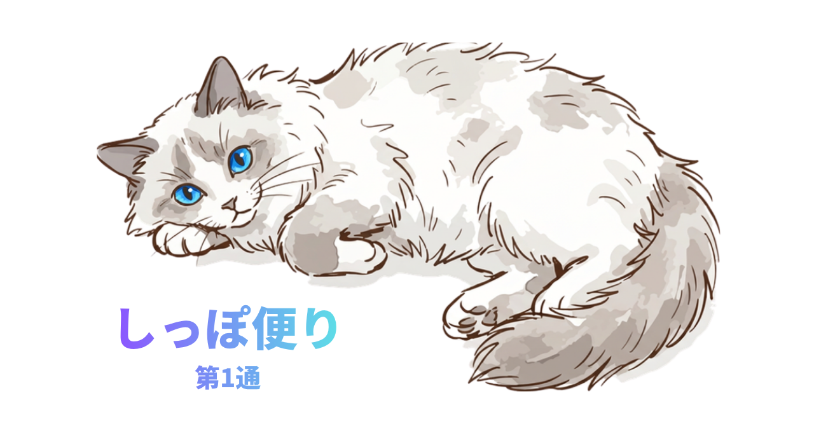
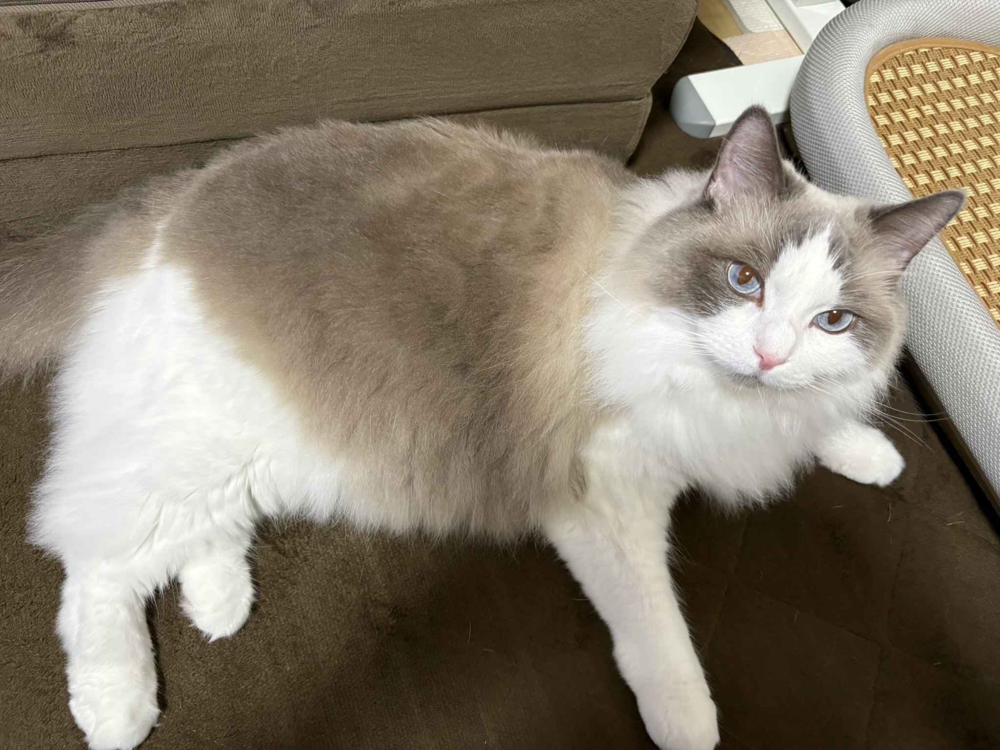
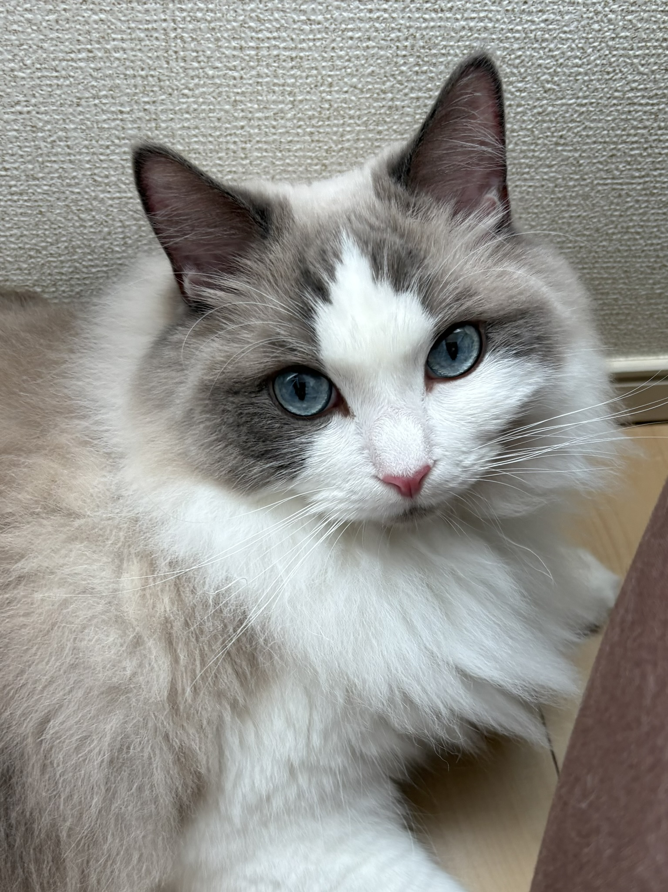
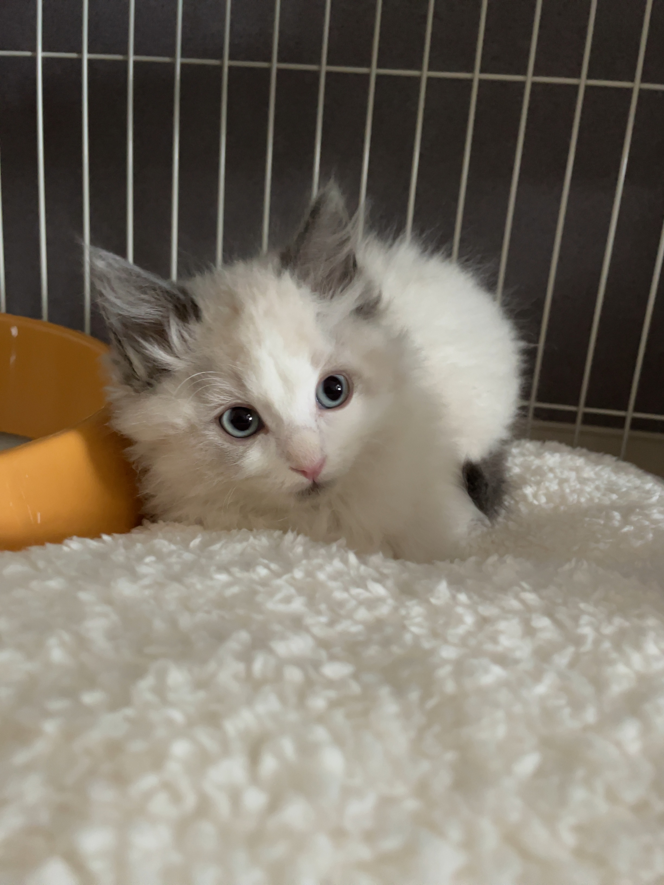
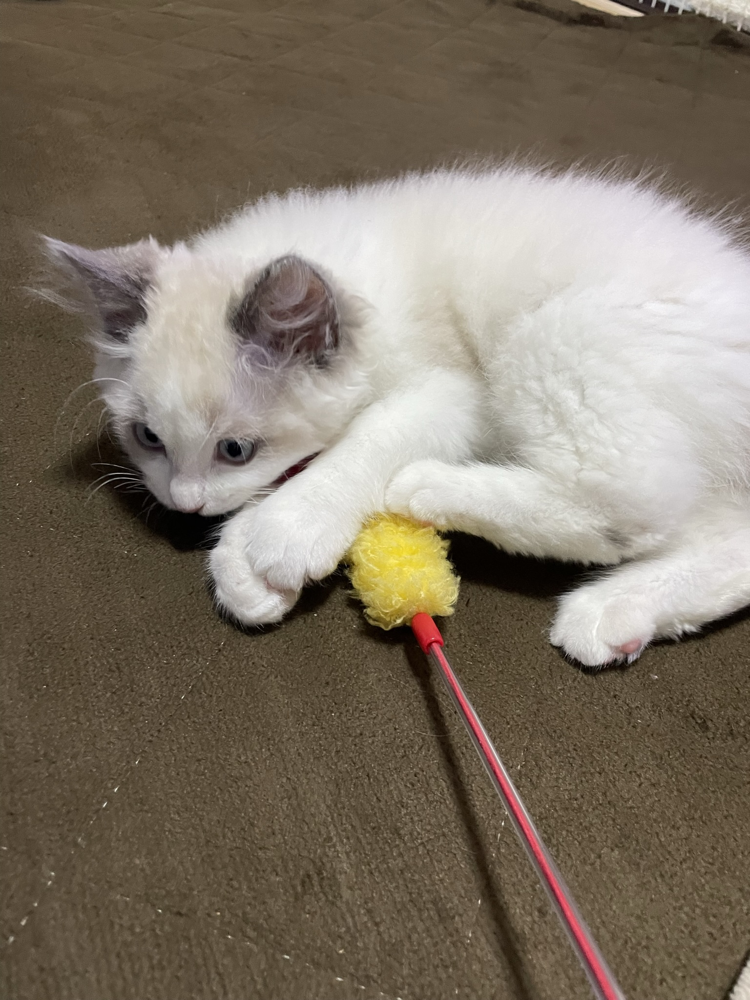
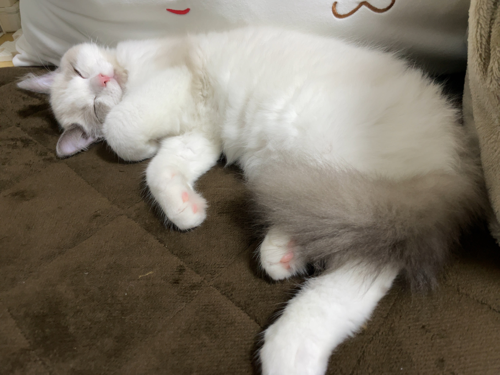
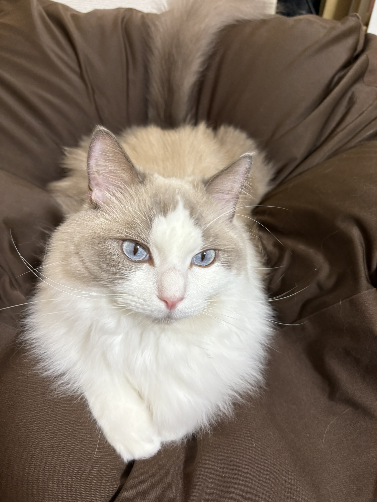
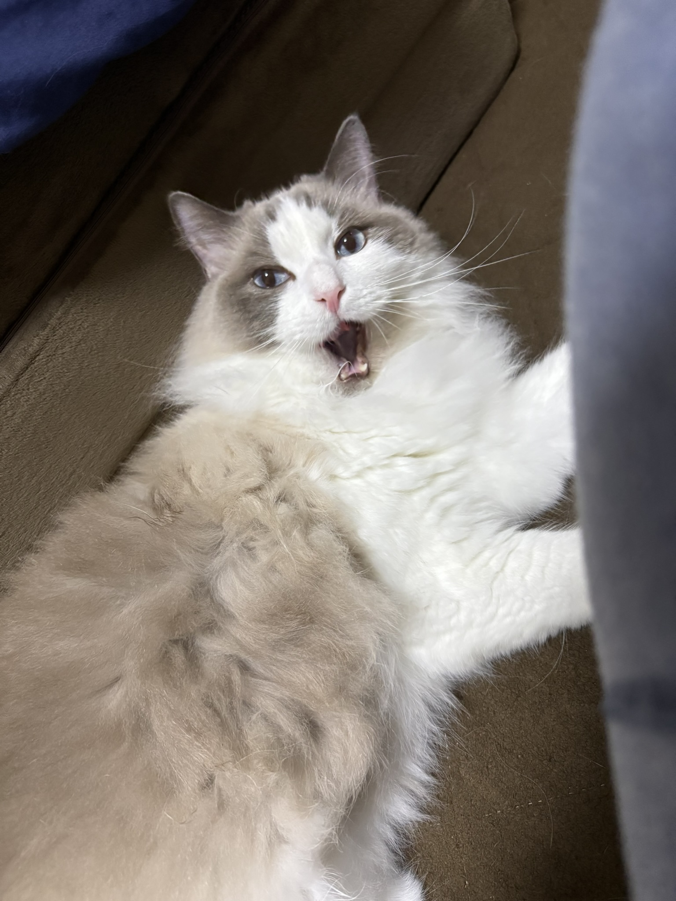
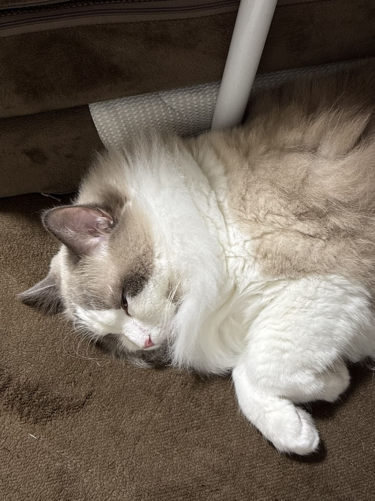
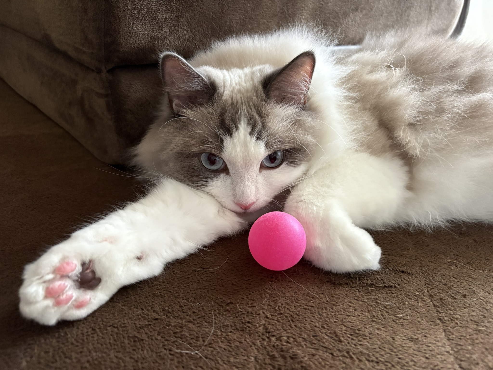

Profile
about me
プロフィール

はじめまして、ぼくのこと。
ふわふわな毛と、のんびりした時間がだいすきです。
このページでは、そんなぼくのことを少しだけ紹介します。
- 名前
- フェル（Fel）
- 猫種
- ラグドール
- 年齢
- 3さい（2023年1月生まれ）
- 性格
-
ツンデレ。
好奇心旺盛だが少し慎重で臆病。 - 好きなこと
-
寝ること、
おもちゃで遊ぶこと。 - 好きな場所
-
キャットタワーや爪とぎ、
いっしょに暮らす人のそば。
Gallery
precious days
お気に入りの写真
何気ない日々が、特別な思い出に。
-

-

-

-

-

-

Diary
letters from Fel
しっぽ便り
愛猫の日常を、猫目線で綴っています。

また遊びにきてね。
フェル より